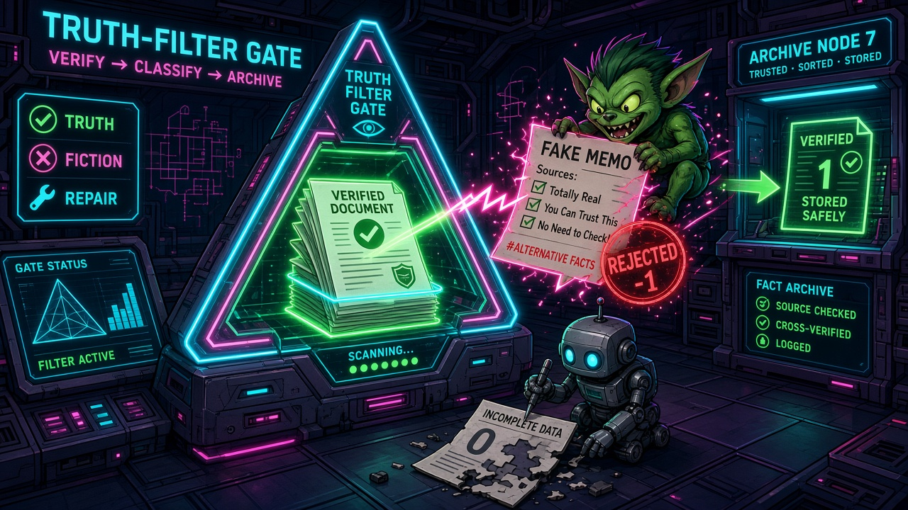

Ep2/5 · TTF-9 Truth-Filter Gate — NuN Nexus of Unity

A neon triangle labelled Truth-Filter Gate hums in a dark server hall. A stack of documents slides through its scanner and glows green: verified. Up on the right, a grinning green gremlin waves a Fake Memo promising 'Totally Real' sources, but a lightning bolt stamps it REJECTED -1. Below, a small repair robot patiently pieces together a torn page marked 0, incomplete data. On the far wall, Archive Node stores only what earned a 1. This is TTF-9: every input scored 1, 0 or -1, combined as F=(x·y·z)^⅓. Only a clean 1 passes; everything else goes to the Repair Engine.